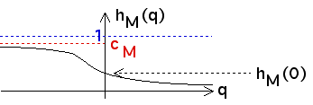

First note h
i
(0) = r
i
tau(0)
, so
0 < h
i
(0) < 1.
Because dh
M
/dq <= 0 and
h
M
(0) > 0
, we see
lim
q -> -infinity
h
M
(q) = c
M
> 0
For example,

Similarly, because dh
m
/dq >= 0 and
h
m
(0) > 0
, we see
lim
q -> infinity
h
m
(q) = c
m
> 0